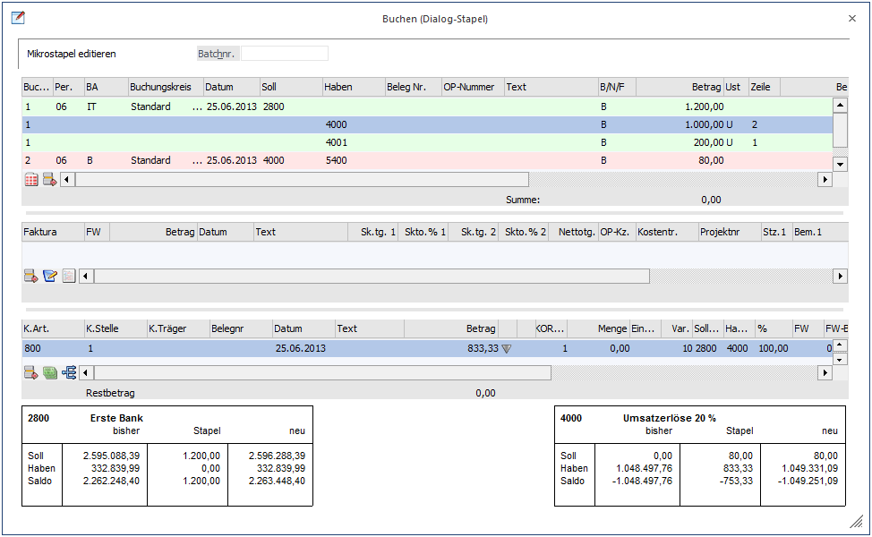
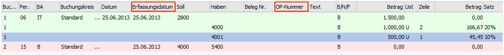
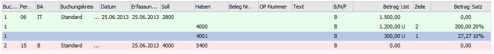
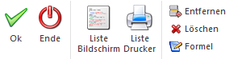

Wird eine vorher definierte Buchungsart (Splitbuchung) (WinLine FIBU/Stammdaten/Buchungsarten) im Buchungsfenster eingegeben, springt automatisch ein neues Fenster auf, indem man sofort alle vorbelegten Buchungszeilen, hinterlegte Konten usw. eines Mikrostapels angezeigt bekommt. Das "Mikrostapel" Fenster funktioniert im Wesentlichen genauso, wie das Hauptbuchungsfenster.
Abhängig von dem dahinterliegenden Buchungsschlüssel, wird beim Verlassen der Zeile, wenn alle notwendigen Eingaben vorhanden sind,
ü ein Offener Posten erzeugt
ü der Fokus in die Zahlungstabelle gesetzt
ü die KORE-Zeile erzeugt bzw. der Fokus in die KORE-Tabelle gesetzt und
ü das Sachkonten-OP-Fenster geöffnet.
Hinweis 1
Die Option "schnelle Kostenerfassung" wird im Mikrostapel nicht unterstützt.

Die Vorbelegungen aus dem Mikrostapeln werden sofort beim Füllen der Tabelle übernommen, alle Eingaben, die abhängig von einem Wert in der ersten Zeile sind, werden erst übernommen, wenn der Fokus erstmals in die Zeile gesetzt wird. Wird ein Wert in der ersten Zeile geändert, werden alle weiteren Zeilen wieder auf "nicht bearbeitet" gesetzt. Man kann sich aber innerhalb der Zeile frei bewegen, um z.B.: die Steuerzeile oder den Steuerbetrag zu editieren.
Hinweis 2
VB-Script-Formeln werden auch schon zu diesem Zeitpunkt, also wenn der Fokus erstmals in die Zeile gesetzt ist, ausgeführt.
Abhängig von den Einstellungen in den FIBU-Parametern, wird das Feld "OP-Nummer" und/oder die Spalte "Erfassungsdatum" in der Tabelle angezeigt oder nicht. Wird das Feld bzw. die Spalte angezeigt, ist es auch editierbar. Wenn in der Buchungsart definiert ist, dass das Feld "Belegnummer" aus der Hauptzeile in eine andere Zeile des Mikrostapels übernommen werden soll, wird auch die "OP-Nummer" mitübernommen.
Wenn beim Buchen einer Zahlung im Mikrostapel eine "OP-Nummer" vergeben wird, wird beim Füllen der Zahlungstabelle entsprechend eingeschränkt, der gefundene Offene Posten wird auch sofort selektiert.

Bei einem Mikrostapel kann jetzt auch ein Nummernkreis hinterlegt werden. Dieser greift aber nur in der ersten Buchungszeile. In den weiteren Zeilen wird die Nummernkreiseinstellung der Buchungsart nicht verwendet. Die Belegnummer kann aber wie üblich aus der Hauptzeile übernommen werden. Auch das Symbol für Nummernkreise, wenn einer verwendet wird, wird im Mikrostapel angezeigt.
In der letzten Zeile der Splitbuchung wird der Restbetrag vorgeschlagen, die Zeile kann auch erst verlassen werden, wenn der Saldo der Buchung 0 beträgt.
Hinweis 3
Buchungen mit Betrag 0 sind im Mikrostapel nicht möglich.
Bevor nicht alle Zeilen abgearbeitet sind, ist der Mikrostapel nicht abgeschlossen. Die bearbeiteten bzw. noch nicht bearbeiteten Zeilen werden farblich dargestellt.

So werden bereits vollständig befüllte Zeilen grün markiert und noch nicht bearbeitete in Rot dargestellt.
Wenn der Mikrostapel abgearbeitet ist, kann durch die einmalige Buchungsbetätigung mit der F5-Taste im Buchungsfenster noch weitere Buchungszeilen erfasst werden. Erst bei der zweiten Bestätigung des OK-Buttons wird der gesamte Buchungsbeleg (Mikrostapel und einzeilige Buchungszeilen) ins Journal geschrieben.
Buttons

Ø OK
Die Auswahl wird bestätigt und der Mikrostapel wir in das Buchungsfenster geladen.
Ø Ende
Mit diesem Button wird das gesamte Buchungsfenster geschlossen. Wurden bereits mehrere Buchungszeilen erfasst, die noch nicht verbucht wurden, wird folgende Meldung ausgegeben:
Wird die Meldung mit JA bestätigt, werden alle Buchungszeilen inkl. den manuell erfassten, gelöscht. Wird mit NEIN bestätigt, kann das Buchungsprogramm normal weiterbearbeitet werden.
Ø Liste Bildschirm / Liste Drucker
Über Liste Bildschirm, bzw. Liste Drucker können die verschiedenen Buchungsarten sowie ggf. deren Vorbelegung angezeigt werden.
Ø Entfernen
In der Mikrostapel-Tabelle gibt es einen Entfernen-Button, mit dem einzelne Splitzeilen oder ganze Buchungen entfernt werden können.
Achtung
Wenn die letzte Splitzeile einer Splitbuchung gelöscht werden soll, wird auch die Hauptzeile mitgelöscht.
Ø Löschen
Durch Betätigen dieses Buttons wird der erfasste Mikrostapel gelöscht.
Ø Formel
Zur Berechnung des Betrages kann mittels VB-Script eine Formel hinterlegt werden.